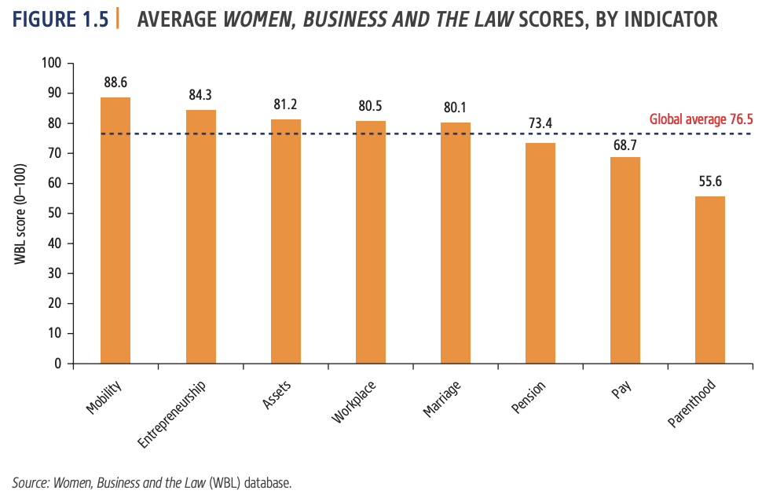

The Gap Between Women's and Men's Economic Rights
The World Bank's Women, Business and the Law 2022 report reveals that around 2.4 billion women of working age face equal economic opportunity and 178 countries maintain legal barriers that prevent their full economic participation. In 86 countries, women face job restrictions, and 95 countries do not guarantee equal pay for equal work. Globally, women have only three quarters of the legal rights afforded to men, with an aggregate score of 76.5 out of 100. Despite the disproportionate effect on women's lives and livelihood from the global pandemic, 23 countries reformed their laws in 2021 to advance women's economic inclusion. The report also includes a 95-country pilot survey of laws governing childcare, highlighting the difference between laws on the books and the reality experienced by women. The report emphasizes the need to accelerate the pace of legal reforms to ensure women can realize their full potential and benefit fully and equally. Women, Business and the Law 2022 explores the legal environment for childcare services and the implementation of laws in 95 economies. Most OECD high-income and Europe and Central Asia economies regulate public childcare services, while the Middle East, North Africa, and South Asia mandate private sector or employer care for working parents. The research also examines quality aspects regulated, such as teacher-to-child ratio, training requirements, and licensing requirements. Further research is needed to understand the factors affecting gender equality. Advanced economies, including Greece, Spain, and Switzerland, are making progress in gender equality legislation. Twelve advanced economies score 100, while the East Asia and Pacific region is slowing down. The Europe and Central Asia region is the second highest scoring region, with an average score of 84.1. Armenia, Ukraine, and Georgia introduced paid paternity and parental leave, while Cyprus allowed women to apply for passports. Latin America and the Caribbean have less than three-quarters of the legal rights of men, with only half of the economies guaranteeing paid leave for fathers. Middle East and North Africa has seen the most significant improvements in women's legal rights, with Bahrain, Egypt, Kuwait, and Lebanon implementing legislation. South Asia has only two-thirds of the legal rights of men, with only one economy reforming, Pakistan. Sub-Saharan Africa has seen significant improvements in women's rights and economic opportunities, with Gabon leading the way with its civil code reforms and law on violence against women. Other African countries, such as Angola, Benin, Burundi, Sierra Leone, and Togo, have also implemented reforms, such as criminalizing sexual harassment in employment, allowing equal remuneration for work of equal value, and reducing gender-based discrimination in financial services. These reforms have helped improve women's economic opportunities in the region.